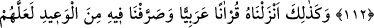
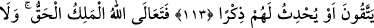
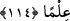

EY RABBİM İLMİMİ ARTIR!
112. Her kim, mü’min olarak iyi olan işlerden yaparsa, artık o, ne zulümden ne de
hakkının çiğnenmesinden korkar.
113. (Rasûlüm!) Biz onu böylece Arapça bir Kur’an olarak indirdik ve onda
ikazları tekrar tekrar açıkladık. Umulur ki onlar (bu sayede günahtan) korunurlar;
yahut da o (Kur’an) kendileri için bir ibret ortaya koyar.
114. Gerçek hükümdar olan Allah, yücedir. Sana O’nun vahyi tamamlanmazdan
önce Kur’an’ı (okumakta) acele etme ve “Rabbim, benim ilmimi artır” de.
“Her kim, mü’min olarak iyi olan işlerden” bazılarını “yaparsa,” çünkü îman,
tâatlerin sahîh ve iyiliklerin makbûl olması için şarttır, “artık o, ne zulümden,” yâni
kendisine vaad edilen hak ettiği sevabın verilmemesinden “ne de hakkının
çiğnenmesinden” yâni amelinin karşılığı olan ecrin eksiltilmesinden “korkar.”
Kâşifî der ki: “O günde mü’minler mâsıyetleri artırılmak ve iyilikleri eksiltilmek
sûretiyle kendilerine zulüm ve haksızlık olur diye korkmazlar. Yâni mü’minin
iyiliklerinden bir şey eksiltilmez ve günahlarından bir şey artırılmaz.”
Şu halde iyiliklere sımsıkı sarıl ve kötülüklerden el çek. Çünkü herkes amel ağacında
yetiştirdiği meyveleri toplar ve tüm emellerine ancak amelleri ile ulaşır. Amellerin en
faziletlisi de, haramlardan sakınarak farzları edâ etmektir.
Süleyman b. Abdülmelik, Ebû Hâzim’e “Bana veciz sözlerle nasîhat et.” dedi. O da:
“Peki, ey mü’minlerin emîri. Yasakladığı şeyi yaparken ve emrini tutmadığında seni
görmesinden Rabb’ini tenzih et.” diye cevap verdi.
Büyüklerden birisi şöyle demiştir: “Hevâ ve hevese tâbi olmanın alâmetlerinden
birisi de nâfile amellere yönelmede istekli ve sür’atli davranıp farzları gereği gibi
yerine getirme konusunda tembellik göstermektir.” Allâh’ın korudukları hâriç halkın
çoğunluğunun hâli budur. Onların çok evrâd, çok sayıda ağır nâfileler yaptığını, fakat bir
farzı bile gereği gibi edâ etmediğini görürsün. Onlar ancak usûlü/asılları zâyi ettikleri
için maksadlarına ulaşmaktan mahrum olmuşlardır.
Ebû Muhammed Mürtaiş (r.h.)’ın şöyle dediği hikaye olunur: “Defalarca tecrid